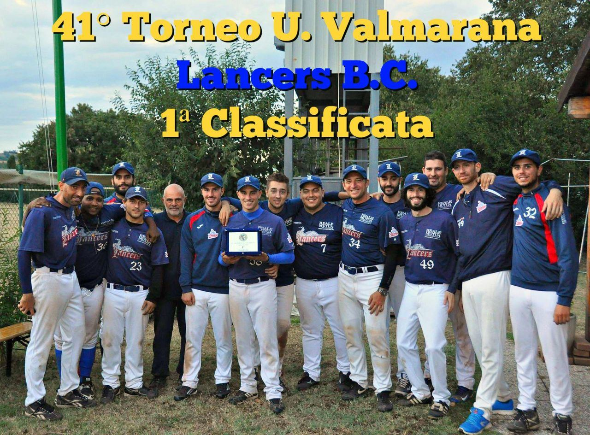

Nonostante il tempo poco favorevole, i Lancers, che giocano in un triangolare la seconda partita contro il Cesena e la terza contro la squadra di casa (il Sasso Marconi, uscita vincente dallo scontro con Cesena), primeggiano nel torneo.
Entrambe le partite vedono però la formazione toscana in svantaggio fino al quarto inning. Fino al quarto inning appunto, ma proprio qui i Lancers scatenano la loro forza, quella mostrata in tutto il campionato.
Contro il Cesena è Albano, con la squadra bianco/blu sotto di due punti, ad iniziare le danze con un doppio in fondo al campo seguito dal solito Lakry Diaz che ribatte con un ennesimo doppio iniziando così la rimonta.
Bastano un paio di inning alla squadra di Gentilini-Ciappi per chiudere definitivamente il match per 7-2, grazie anche allo stesso Ciappi che rileva in maniera magistrale il partente Lapini.
Piccolo pranzo per ricaricare le pile e si riparte con altro baseball.
Nonostante la mattina ci sia stato una pioggia continua, il pomeriggio il cielo si apre e si può giocare, Lancers contro Sasso Marconi per il primo posto del torneo!!!
Anche qui però, nonostante la formazione titolare in campo, si parte in svantaggio sotto di 4 punti grazie ad un paio di valide ben assestate dai padroni di casa.
Tuttavia è sempre al quarto inning che, con basi piene, Simone Geri spara un triplo all’esterno centro portando i Lancers a segnare 8 punti in un inning e 2 nell’inning successivo. Risultato finale Lancers 10 Sasso Marconi 4.
Bella vittoria in un torneo difficile mai vinto prima di ieri!
Buona prestazione del partente Baratella e di tutto il lineup che ha saputo riacciuffare una gara complicata con un avversario ostico come quello emiliano.
Grazie a tutti i ragazzi, in particolar modo a Guido Nannucci che è tornato a tempo pieno con il gruppo per poter ampliare la rosa in vista dei difficili play-off in programma per questo fine settimana.
Nel prossimo articolo troverete un resoconto di ciò che ci attende nelle prossime due settimane, la speranza di tutto l’ambiento bianco/blu è che questo non sia l’ultimo successo stagionale!